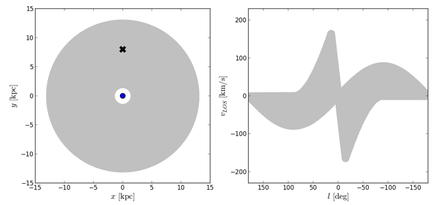

The Milky WayHow much do we really understand about our own galaxy? |
Relevant papers: Hunt et al. 2020, Quillen et al. 2020, Pettitt et al. 2020, Schuller et al. 2017, Pettitt et al. 2015, Tremblin et al. 2014, Pettitt et al. 2014.
Whilst we have many remarkable images of a veritable zoo of galaxies across the Universe, we know surprisingly little of the appearance of our own galaxy (the Milky Way). The problem is that we are stuck within our own galactic disc, making construction of a top-down map problematic. An analogy is trying to draw a picture of your house when you are trapped inside, without being allowed to leave your room.
The cartoon here is a schematic of what we think the Milky Way looks like, with many arm features and some king of inner bar. However, this is an over-simplification and the water is still murky with regards to specifics. Does the Milky Way have two, four, or no clear arm structure? Do the stars and gas trace the same structures? What is the nature of the inner bar, is it a long thin or short and stout? Does it rotate with the arms, or faster? And possibly most importantly: how does all this impact the star forming history of the Galaxy?
By using high resolution simulations, like the one pictured below, we can hope to better understand the Milky Way. We fortunately find ourselves in the era of excellent observational data for the Milky Way, with many modern, cutting-edge, surveys pushing the frontiers of Galactic astrophysics. This leaves theorists like myself with a treasure-trove of high resolution data to test our models of Galactic structure.
An important aspect of correctly modelling the Milky Way is then investigating how such models impact the star formation within the Galaxy. The complex interplay between the arms and bar and cause a complex array of features, which can leave its imprint on the stellar disc. The movie below shows how dense, star-forming gas is redistributed by the motion of bars and arms.
Modern observational efforts have brought with them a wealth of exciting new data. The Gaia satellite in particular has shown the Milky Way is anything but bland, with many indicators of a it not being in a state of exact equilibrium. The two left panels below show the velocities stars are moving at at near the Sun (black dot) as seen in the Gaia data, showing large-scale variations in the motion of stars. Data like this provides an excellent tool to test models of the Galaxy, such as those shown in the right two panels, which are similar velocity maps made from within a numerical simulation.
One approach to pinning down the structure of the Milky Way is to instead try and replicate the observed velocity structure, rather than directly reproduce a top-down map. Over-densities in the Galactic disc, such as those made by spiral arms, appear as features in velocity space too (see cartoon below). 
By using our simulations of the gas in the Milky Way we can constrain certain morphologies to the velocity structure of the observed Milky Way. This allows for a reverse-engineering of a top-down map of the Galaxy. Below is a movie showing the simulation and synthetic observations created from one of the best fit models. This model has a 4-armed and short, rapidly rotating inner bar.